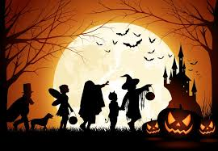
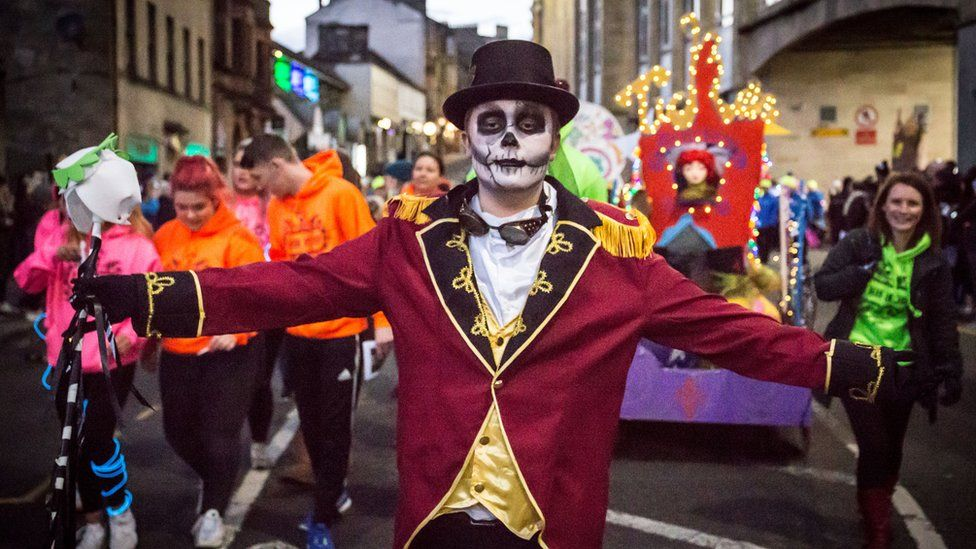

Halloween
Halloween adalah perayaan yang diadakan setiap tanggal 31 Oktober. Perayaan ini mengawali peringatan trihari Masa Para Kudus, periode untuk mengenang orang yang telah meninggal dunia.
Bangsa Celtic, sebagai bangsa pertama yang mencetuskan perayaan ini percaya bahwa setiap tanggal 31 Oktober, pembatas antara dunia orang mati dan orang hidup terbuka. Banyak roh jahat yang akan berkeliaran dan menggangu mereka. Roh-roh jahat tersebut mengancam memberikan kerugian pada warga. Agar terhindar dari ancaman tersebut, bangsa Ciltex memakai kostum-kostum menyeramkan. Tujuanya adalah, agar "roh jahat" yang mungkin keluar mengura manusia adalah teman mereka. Bisa dikatakan mereka mencoba berdamai dengan para roh jahat dengan berpenampilan mirip dengan mereka.
Mitos dan Fakta mengenai Halloween
Mitos
1. Konon katanya, melihat laba-laba di malam Halloween berarti arwha orang yang kita sayangi sedang mengawasi.
2. Membunyikan bel di malam hari dapat mengusir roh jahat
3. Ketakutan pada malam halloween disebut dengan Samhainphobia
Fakta
1. Halloween telah dirayakan lebih dari 2000 tahun yang lalu
2. Negara-negara yang merayakan Halloween adalah Kanada, Irlandia, Selandia Baru, Britania Raya, Jepang, Bahama, Amerika Serikat, Swedia dan negara – negara Amerika Latin
3. 85% warga di Amerika Serikat merayakan Halloween
4. Konsumsi gula pada perayaan halloween jauh lebih besar dari pada natal dan valentine.